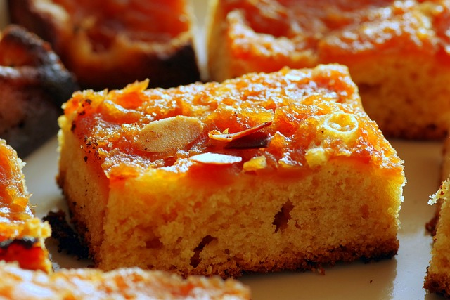

Apple Pie

Description
Apple Pie is a classic American dessert featuring a flaky crust filled with sweet and spiced apple slices. This comforting treat is perfect for holidays, special occasions, or as a delightful end to any meal.
Ingredients
- Pie crust (homemade or store-bought)
- Apples (Granny Smith or other tart varieties)
- Sugar
- Cinnamon
- Nutmeg
- Lemon juice
- Flour
- Butter
- Egg (for egg wash)
Steps
- Preheat oven to 425°F (220°C).
- Peel, core, and slice apples.
- Mix apples with sugar, spices, lemon juice, and flour.
- Line a pie dish with one pie crust.
- Fill with apple mixture and dot with butter.
- Cover with the second pie crust, seal edges, and cut vents.
- Brush with egg wash and sprinkle with sugar.
- Bake for 45-50 minutes until golden brown.
- Cool before serving.